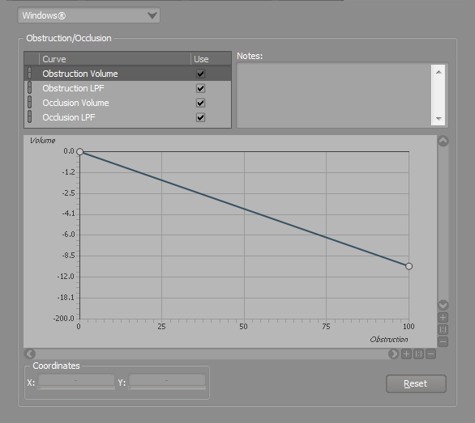
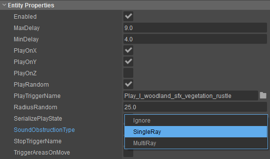

Обзор
В этой статье объясняется, как использовать настройки препятствий/окклюзии в Wwise.
Настройка окклюзии в Wwise
В Wwise вы можете настроить два отдельных поведения для Затухание громкости и Фильтрация нижних частот, которые выполняются на источнике звука всякий раз, когда подключенный игровой объект затрудненный или закупоренный. На снимке экрана ниже ось X со значениями от 0 до 100 относится к Обструкция/окклюзия значение в Wwise, которое изменяется от 0 до 1.

В Wwise VolumeAttenuation и LowPass Фильтрация кривые могут быть установлены по-разному для каждой платформы; это дает вам больше гибкости в настройке окончательного звука вашей игры в соответствии с любыми конкретными проблемами платформы, которые могут возникнуть.
Вы можете получить доступ к Обструкция/окклюзия настройки вашего проекта, открыв Проект->Настройки проекта а затем переключение tо тот Обструкция/окклюзия вкладка.
В Wwise вы можете тестировать различные настройки препятствий/окклюзии при подключении к редактору и без необходимости перестраивать свой SoundBanks. Вам необходимо сохранить проект после внесения изменений и заново подключиться к работающему CRYENGINE.
Примеры настройки при использовании Raycast в CRYENGINE
Оптимизация производительности при рандомизации звуков OneShot
Когда вы добавляете Аудио-триггер который запускает звук OneShots через заданные интервалы времени, вы можете определить случайный контейнер в Wwise и запускать его повторно в указанном случайном диапазоне времени.
Однако когда вы настраиваете звуки OneShot, Аудио-триггер будет продолжаться Рейкастинг, даже если в этот момент в Wwise звук не воспроизводится. Это потому, что Wwise PlayEvenт на GameObject не останавливается в периоды, когда звук не воспроизводится. Поэтому рекомендуется включить Рандомизацию непосредственно в свойствах файла. Аудио-триггер и не в Wwise. Это будет добавлять Raycast только тогда, когда воспроизводится фактическое событие, и останавливать Raycasting во время перерывов между ними, когда активное событие не воспроизводится.

Рандомизация позиционирования
Вы можете создавать звуки с помощью ручного позиционирования пользователя в Wwise, хотя эти звуки не учитывают никаких Обструкция/окклюзия это происходит в игровой среде. Аудио-триггер позволяет рандомизировать его положение независимо от Оси X, Y и Z.
С PlayOnX, PlayOnY, PlayOnZ свойства Аудио-триггер, вы можете рандомизировать позицию SoundSource в игровой среде, и на нее будут влиять игровые объекты в соответствии с Окклюзия/Обструкция свойства, которые вы определили.
Ссылки на эту настройку можно найти на уровнях витрины редактора CRYENGINE Sandbox.